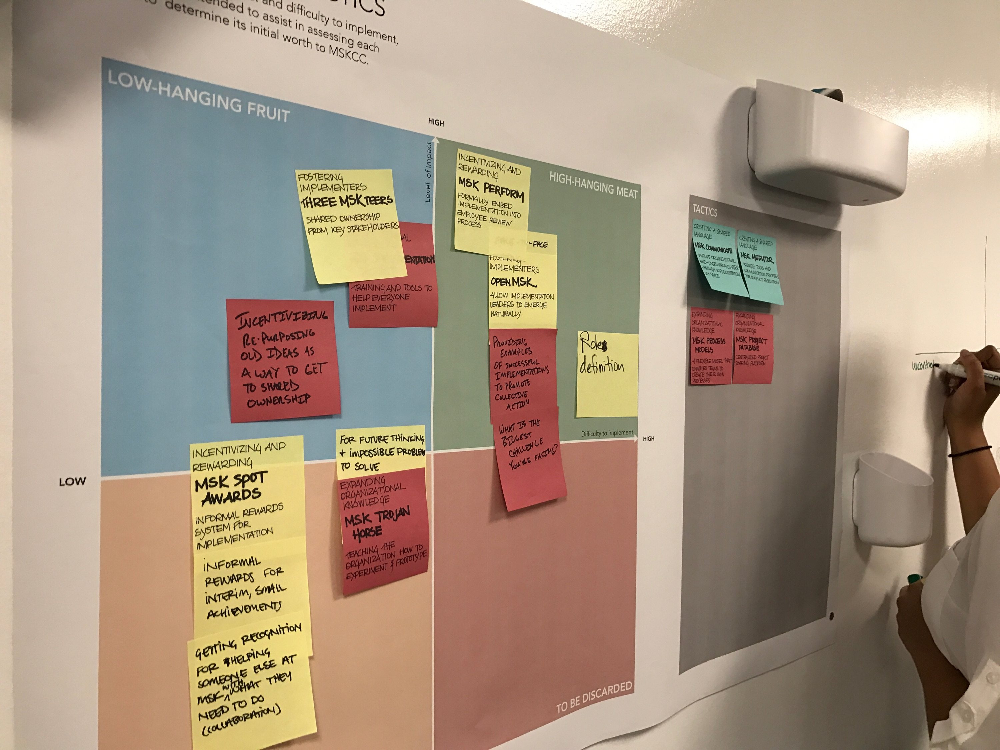

Work experience

University of Illinois Hospital and Health Systems, Chicago IL
Design Research Associate
Summer 2015
- Functioned as a communication design resource for the Division of Pulmonary, Critical Care, and Allergy.
- Recruited and moderated a DScout study involving Chronic Obstructive Pulmonary Disease (COPD) patients and their caregivers.
- Audited, redesigned, and prototyped patient and stakeholder-facing materials for current research projects.
- Designed recruitment advertisement to be displayed on CTA buses and trains. Created infographic, patient journey, and logo to support a proposed grant.
- Conducted multi-site stakeholder interviews to better inform processes in existing and future research.